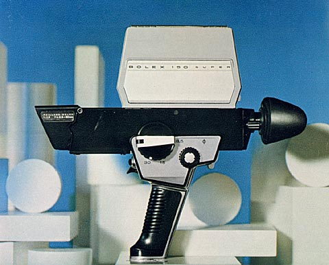
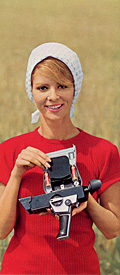
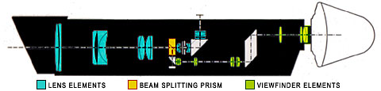

150 SUPER
Super 8mm Camera
1967
- WEIGHT: 2 lb, 6 oz. (1.08 kg)
- TYPE: Super 8 cartridge load, battery operated.
- POWER SUPPLY: Camera motor: four 1.5v AA batteries. Exposure control: two PX-13 1.35v mercury cells.
- LENS: Paillard 8.5mm-30mm f/1.9 zoom lens. Focal length is controlled by turning a milled knob, equipped with a folding lever. Focusing from 32" to infinity is controlled by milled thumb-knob. Lens hood folds down when not in use. Built-in mount accepts series VI filters.
- AUTOMATIC EXPOSURE: Fully automatic exposure control; Diaphragm lock for manual exposure control.

VIEWFINDER: Reflex viewing with semi-reflecting prism system. Adjustable knob for image sharpness.- SINGLE SPEED: 18 frames per second
- RELEASE BUTTON: Continuous exposures can be made by a trigger release on the front of the grip handle. Trigger can be flipped up to prevent accidental filming.
- FOOTAGE COUNTER: A large clock-style footage indicator, divided into 24 sectors of 8 seconds, shows how much film is left in the camera.
- SINGLE FRAME: A specially designed accessory, positioned in front of the ordinary release, allows the user to expose single frames for filming animation, titles, etc.
- GRIP: Built-in grip with trigger release and 1/4" thread tripod socket.
- INCLUDED ACCESSORIES: Carrying case; Filter mount; Neck Strap
Notes and Comments
The Bolex 150 Super was introduced in 1967, two years after Kodak's introduction of Super 8 film. The 150 featured an unconventional design with a built-in lens, bright reflex viewfinder and a film chamber located on top of the camera body.

The lens system, designed by Paillard, included 17 elements and a series of prisms used to divert light to the film and the reflex viewfinder. 16% of the light passing through the lens was sent to the viewfinder by a beam-splitting prism; the remaining 84% was reflected upwards by 90° into the film chamber. [1]
Controls for zooming and focusing were located on the left side of the camera. The zoom control could be rotated to zoom from 8.5mm to 30mm focal length and also featured a fold-out lever. The focus knob could be easily turned with the thumb to focus from 32 inches to infinity; a dial on the opposite side indicated the setting in feet and meters.
The film chamber housing contained space for four (4) AA alkaline batteries used to power the motor and two (2) PX-13 Mallory batteries for the exposure meter. Although there was no provision for manual adjustment of a diaphragm, a button on the front of the camera could be held to lock the diaphragm as long as the button was depressed. This method allowed the diaphragm setting to be held constant while panning or zooming through areas of different brightness, without the undesirable effect of a constantly adjusting iris.
Inside of the film chamber was a manual control lever for a Type A daylight conversion filter. Two symbols -- a light bulb and a sun -- indicated whether the camera was set for tungsten or daylight. A 650 W quartz halogen lamp (the Bolex Movie Lite S2) could be attached to the camera as a light source. When used, it automatically moved the daylight filter out of the way when the light was switched on, and returned it to the daylight position when switched off.
Paillard-Bolex Super 8 cameras:
150 Super, 155 Macrozoom, 7.5 Macrozoom and 160 Macrozoom.
Serial Numbers and Dates of Manufacture
The serial number on Bolex 150 Super cameras is located on the bottom of the lens housing, just above the trigger release and exposure lock; it can be used to determine the year in which it was manufactured.
| # | Year | ||
|---|---|---|---|
| D 10000 | — | D 16000 | 1966 |
| D 16000 | — | D 52900 | 1967 |
| D 52900 | — | D 55615 | 1968 |
1 Murray Duitz, "Bolex 150," Popular Photography, March 1967, 8.